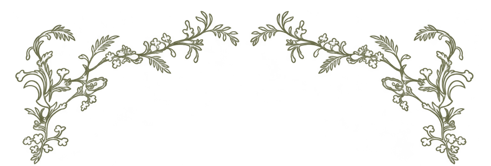
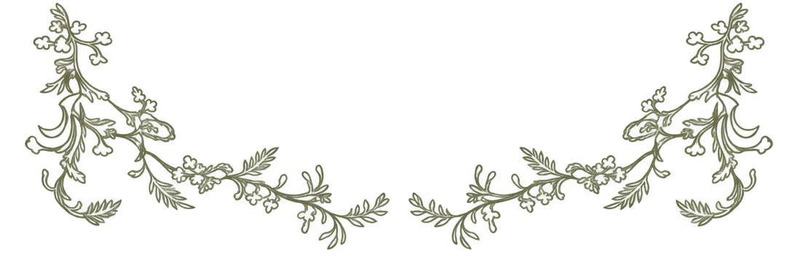

Prispelo je pismo
Tjaše
&
Andraža

Save the
Date
18 · 9 · 2027
Goriška Brda &
Vipavska dolina

Klikni na kuverto
Save
the
Date
18 · 9 · 2027
Goriška Brda &
Vipavska dolina
TJAŠA
in
ANDRAŽ
–
dni
–
ur
–
min
–
sek
Obred
Vila Vipolže
Vipolže, Goriška Brda
→
Zabava
Posestvo Rouna
Slap, Vipavska dolina
→
Za vsa vprašanja
tjasamiric@gmail.com
tomsic.andraz@gmail.com